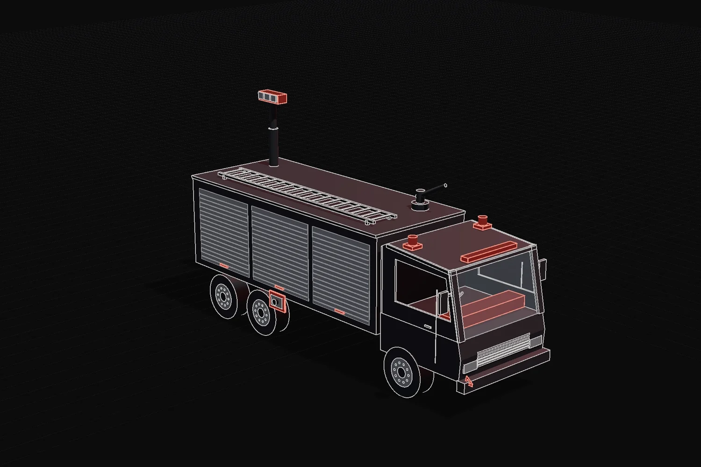
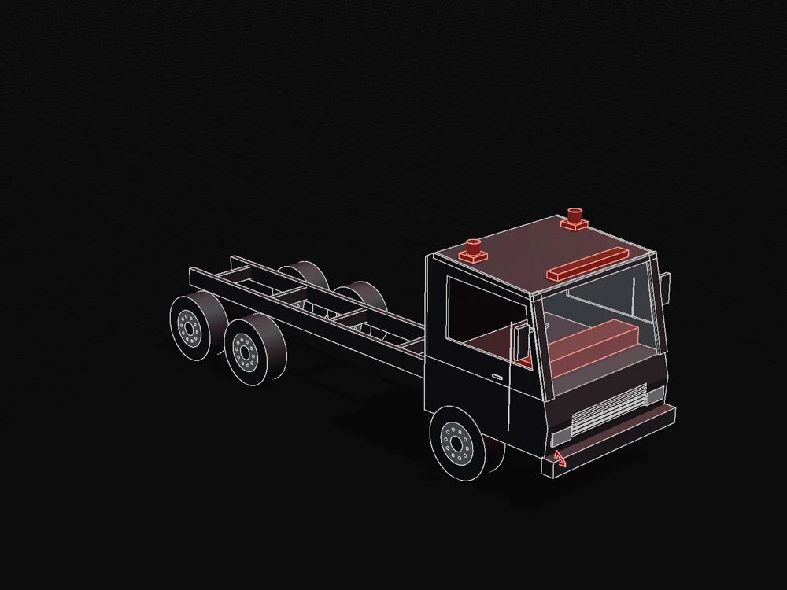
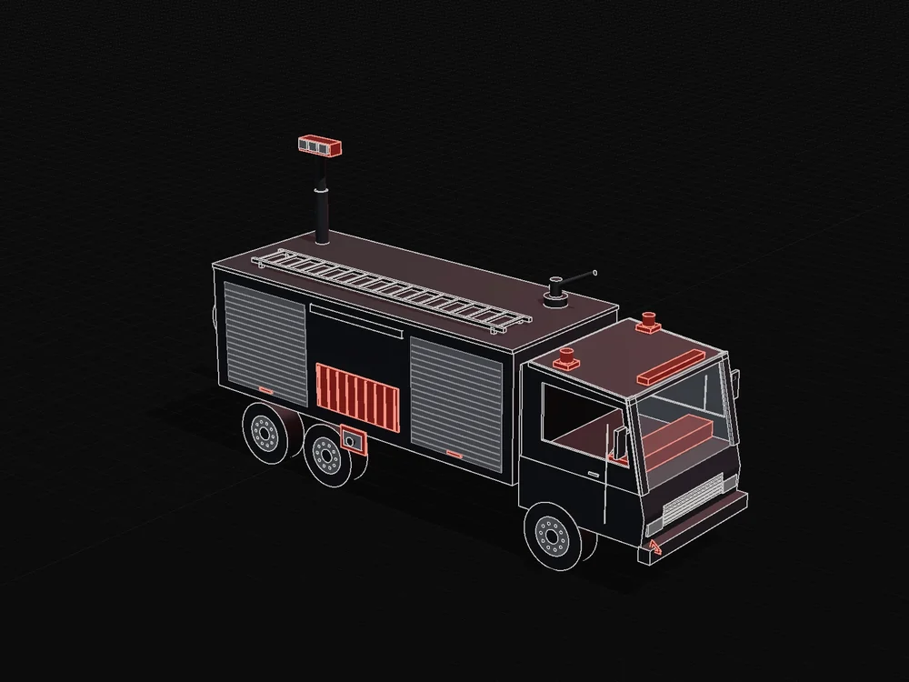
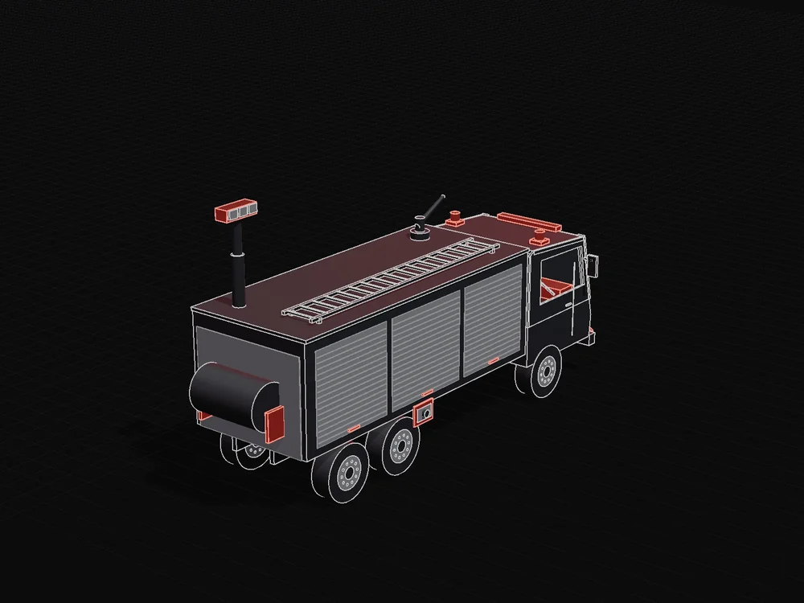
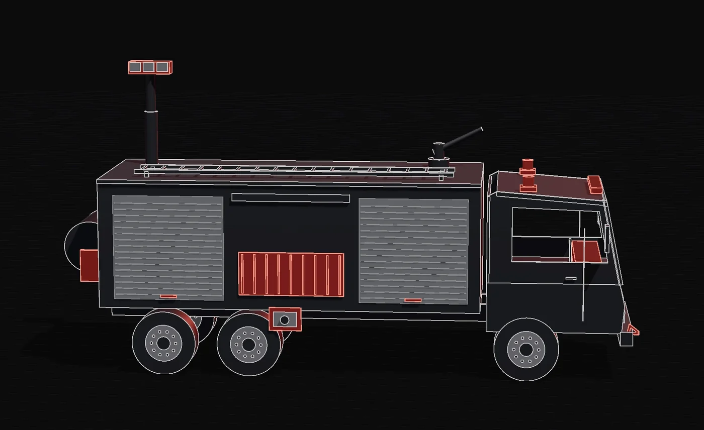

Decine di esemplari, non migliaia.
Un allestimento vive in serie da decine di veicoli, ogni commessa ha le sue varianti, e la flotta resta in servizio per vent'anni. Su numeri così lo stampo non si ammortizza mai.
Scheda PDF del settoreLe parti giuste, oggi, si producono meglio in additive: sono quelle in rosso.

- Tavola
- TAV 02
- Soggetto
- Autopompa su autotelaio a tre assi
- In rosso
- le parti che si producono in additive
- Resa
- CAD di riferimento: non una commessa, non una foto
- 0
stampi da ammortizzare: la variante per l'ente è un file
- 20
anni di flotta: il ricambio si riordina identico
- 2K
smalto a specifica: colore del cliente, stabile agli UV
- 24h
lavorative: la fascia la conferma una persona
Il conto che conoscete
Quattro voci del vostro conto economico
- 01 / 04
Serie da allestimento
Il costo per pezzo è stabile dal primo all'ultimo veicolo della commessa: niente stampi da dividere, niente minimi. La variante per il singolo ente è un file.
capitale libero · varianti a costo di file
- 02 / 04
Ricambi di flotta on-demand
Il magazzino ricambi diventa digitale: si riordina quando la flotta lo chiede, identico al lotto precedente. A disegno perduto si parte dal pezzo: rilievo 3D e reverse engineering.
flotte ventennali · lotto tracciato
- 03 / 04
Interni e condotti consolidati
Plance, coperture elettronica, staffe strumentazione e condotti d'aria ottimizzati nella portata: gruppi multipezzo che diventano monoblocco, pronti al montaggio.
meno assemblaggio · meno codici a distinta
- 04 / 04
Finitura da carrozzeria
Verniciatura a liquido 2K a specifica: colore del cliente, opaco o goffrato, protezione da UV, urti e abrasione. La superficie è all'altezza del veicolo, non del prototipo.
estetica + sigillo · anche basso-emissiva
Dentro il veicolo
Dal telaio all'allestimento
Il camion è di serie. L'allestimento no: e l'allestimento sta nei vani, sul tetto e sul retro.

01 · Autotelaio 
02 · Telaio e modulo 
03 · Veicolo completo
Tavola tecnica, non fotografia · DPG-WEB

La mappa dei componenti additive
Sette famiglie marcate sul veicolo, dai supporti dei lampeggianti alla cornice della presa idrica. Le marcature sono indicative: la distinta reale si valida sul capitolato, insieme.
| Cod. | Famiglia di componenti |
|---|---|
| 01 | Basi e supporti lampeggianti |
| 02 | Carter testata torre faro |
| 03 | Plancia e coperture elettronica di cabina |
| 04 | Ripari e supporti, vano gruppo elettrogeno |
| 05 | Cornice e sportello della presa idrica |
| 06 | Selle e guide del naspo, terminali tubo |
| 07 | Maniglie e riscontri delle serrande |
Materiale e finitura per famiglia si confermano insieme, sul vostro capitolato.
Materiali
I materiali per il settore
Valori indicativi, riferiti al materiale e dichiarati dal produttore della polvere o del filamento. Il pezzo si qualifica sul vostro disegno. Le schede materiale DPG-MAT si ricevono con l'offerta.
La matrice completa dei materiali| Materiale | Processo | Perché qui |
|---|---|---|
| PA11 | SLS | urto a freddo, ambienti umidi e salini: strade invernali e lavaggi |
| PA2200 (PA12) | SLS | il tuttofare degli interni: da −40 a +80 °C sotto carico |
| Nylon 12CF | FDM | staffe e supporti: rigidità estrema a peso minimo |
| Ultem 9085 | FDM | dove il capitolato chiede il fuoco: UL94 V-0, FAR 25.853, EN 45545-2 a livello di materiale, con tracciabilità del pezzo; le prove sul componente finito si costruiscono insieme |
Casi
Già su strada
La finitura, presa sul serio
A un costruttore storico di mezzi speciali che chiedeva garanzie sulla verniciatura abbiamo risposto con la specifica completa dello smalto 2K: adesione diretta senza primer, barriera anticorrosiva, resistenza a olii e carburanti, nero opaco stabile agli UV. La finitura, da noi, è ingegneria, non un passaggio finale.
Leggi il casoIn gara, in campionato
Su un'auto da rally in campionato produciamo ricambistica e miglioramenti che reggono la corsa: condotto di aspirazione turbo ottimizzato nella portata, griglie intercooler, convogliatori e supporti fanali, in PA11, PA12 e Nylon 12CF.
Leggi il casoLe finiture, sul pezzo
Scegliete il pezzo, poi la finitura.
Pezzi tipici di ogni campo, disegnati da noi. Trascinate per ruotarli; su F2 scegliete il colore. Resa da modello 3D, dichiarata: i provini veri si toccano in sede.
 Trascinate per ruotare · rotellina per avvicinare
Trascinate per ruotare · rotellina per avvicinare
Il browser non mostra il 3D: le finiture sono descritte qui accanto.
Il pezzo
La finitura
Il PP in SAF esce grigio dalla macchina: le finiture oltre il grezzo si concordano sul pezzo.
- Il pezzo
- Processo
- Resa
- CAD di riferimento: non una commessa, non una foto
Preventivo indicativo
La fascia di prezzo, in un minuto
Caricate l'STL o inserite i dati a mano; lo STEP mandatecelo per mail. Il file non viene caricato su nessun server: l'analisi avviene nel vostro browser.
I parametri di questa demo sono di esempio: la fascia non è un'offerta. Sul prezzo reale incide anche la saturazione della camera della macchina. La fascia è indicativa e non vincolante: la conferma è di una persona, entro 24 ore lavorative.
- File
- STL
- Analisi
- nel vostro browser, nessun server
- Processo
- SLS · FDM
- Conferma
- una persona, entro 24 ore lavorative
Domande frequenti
Le domande che arrivano dal vostro settore.
Tutte le domandeLo strutturale di telaio resta in metallo, e quando serve lo instradiamo alla nostra rete di partner qualificati. Sopra i volumi da grande serie torna lo stampo. E il primo articolo va validato sul veicolo: è un percorso breve, ma reale.
01Quanti pezzi conviene fare in additive?
Sotto la soglia di ammortamento dello stampo: lotti da uno a cinquanta, serie da decine o centinaia l'anno, varianti per cliente. Sopra i volumi da stampo torna lo stampo, e vi aiutiamo a fare il passaggio.
05E se il disegno non c'è più?
Si parte dal pezzo: rilievo 3D, reverse engineering, e il ricambio rientra a magazzino, digitale questa volta.
08La superficie è all'altezza di un pezzo stampato?
Dipende dalla finitura: da F0, grezzo tecnico, a F2, verniciato a liquido 2K a colore esatto, fino a F3, grado cleanroom, solo in SLS. Con giochi sotto 0,3 mm l'accoppiamento tra particolari verniciati non si garantisce.
09E la classificazione al fuoco?
Dove il capitolato la chiede si sale a Ultem 9085: UL94 V-0, FAR 25.853, EN 45545-2 a livello di materiale. Dove il capitolato richiede prove sul componente finito, il percorso di qualifica si costruisce insieme, e ve lo diciamo prima, non dopo.
10Quando non conviene?
Sotto la scala delle macchine da tavolo il pezzo ve lo fate in casa, e fate bene. Sopra i volumi da stampo torna lo stampo. E il ricambio strutturale in metallo resta in metallo: lo instradiamo alla nostra rete di partner qualificati.